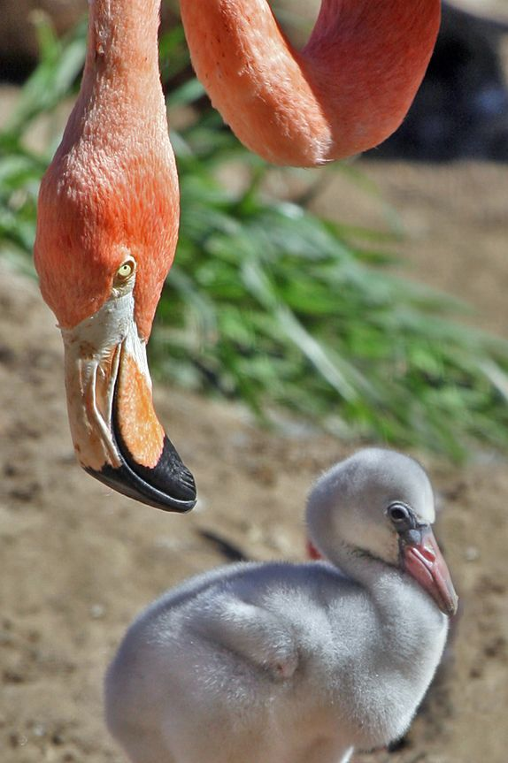
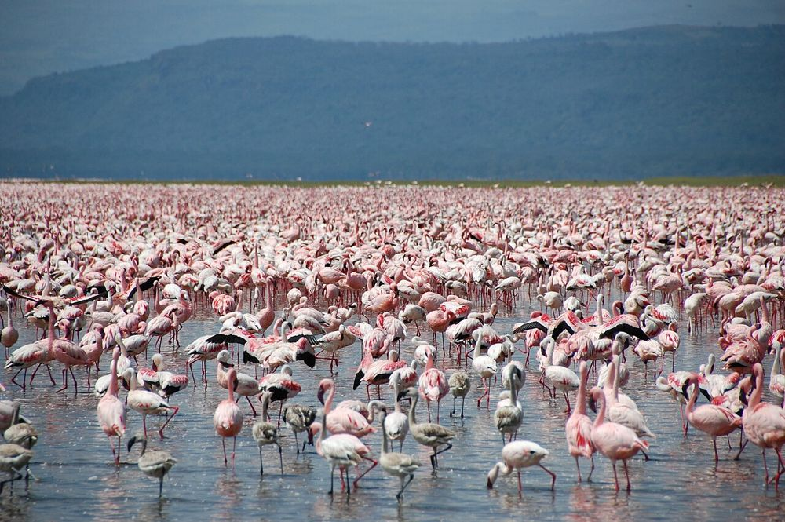

1Gri yavrular
Flamingo yavruları yumurtadan gri ya da beyazımsı, yumuşak tüylerle çıkar. Gagaları da yetişkinlerinki gibi kıvrık değil, düzdür. Ünlü pembe renk ancak birkaç yıl içinde, beslenmeye bağlı olarak yavaş yavaş ortaya çıkar.
Flamingo yavruları ilk aylarında ebeveynlerinin boğazlarında ürettikleri, 'kursak sütü' denen kırmızımsı bir sıvıyla beslenir. Bu sıvı hem anne hem baba tarafından üretilir.

2Renk tabaktan geliyor
Flamingoların yediği algler, tuzlu su karidesleri ve küçük kabuklular karotenoid denen doğal boyalar içerir. Bunlar havuca turuncu, domatese kırmızı rengini veren boyalarla aynı ailedendir.
Flamingonun sindirim sistemi bu boyaları parçalar ve yeniden düzenleyerek tüylerine, derisine ve bacaklarına taşır. Bir flamingo ne kadar çok karotenoid yerse o kadar pembe ya da kırmızı olur. Karayip flamingosu gibi bazı türler neredeyse kırmızıdır.
3Ters dönmüş gagayla beslenme
Flamingolar beslenirken başlarını ters çevirip gagalarını suya sokar. Gagalarının kenarlarında süzgeç gibi çalışan ince yapılar vardır. Dilleriyle suyu pompalayarak çamurlu sudaki küçük canlıları ve algleri süzerler.
Bu yüzden flamingolar çoğunlukla tuzlu ya da sodalı göllerde, başka hayvanların pek yaşayamadığı yerlerde büyük sürüler hâlinde yaşar. Türkiye'de de Tuz Gölü ve Gediz Deltası gibi yerlerde flamingolar görülür.

4Hayvanat bahçelerindeki çözüm
Hayvanat bahçelerinde karotenoid içeren besinlerle beslenmeyen flamingolar zamanla soluklaşır, beyaza yakın bir renge döner. Bu yüzden bakıcılar flamingoların yemlerine özel karotenoid takviyeleri ekler.
Pembe renk flamingolar için önemlidir. Canlı renkli bireylerin daha sağlıklı oldukları ve eş bulmada daha başarılı oldukları düşünülüyor.
💡 Biliyor muydun?
- Flamingolar tek ayak üstünde uzun süre dengede durabilir. Bunun vücut ısısını korumaya ve kas yorgunluğunu azaltmaya yardımcı olduğu düşünülüyor.
- Flamingoların 'geriye doğru büküldüğünü' sandığımız eklemi aslında dizi değil, bileğidir.
- Flamingo sürülerine İngilizcede 'flamboyance' (gösteriş) denir.
✅ Kaynaklar
📷 Görseller
- Kapak: JeffreyGammon · CC BY 4.0 · Wikimedia Commons
- Bir flamingo ve gri tüylü yavrusu: Steve from washington, dc, usa · CC BY-SA 2.0 · Wikimedia Commons
- Kenya'daki Nakuru Gölü'nde binlerce küçük flamingo: Syllabub · CC BY-SA 3.0 · Wikimedia Commons